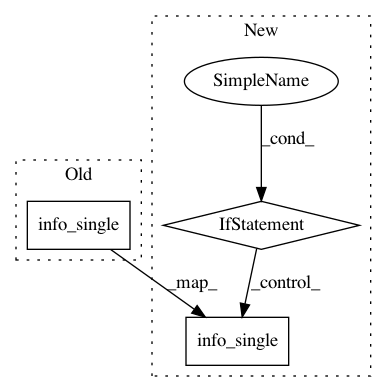

086a757826e925559981ff6da8a60296d7d0ca95,anvio/drivers/pyani.py,PyANI,run_command,#PyANI#Any#,55
Before Change
raise ConfigError("None of the output matrices pyANI was supposed to generate was found in the\
output directory :( You may find some clues in the log file?")
self.run.info_single("Output matrices for the following items are stored in the output\
directory: %s <success kid meme.png>." % \
(", ".join([""%s"" % m.replace("_", " ") for m in matrices])), nl_before=1, mc="green")
// restore old working directory
os.chdir(old_wd)
After Change
raise ConfigError("None of the output matrices pyANI was supposed to generate was found in the\
output directory :( You may find some clues in the log file?")
if not self.quiet:
self.run.info_single("Output matrices for the following items are stored in the output\
directory: %s <success kid meme.png>." % \
(", ".join([""%s"" % m.replace("_", " ") for m in matrices])), nl_before=1, mc="green")
// restore old working directory
os.chdir(old_wd)
return matrices
In pattern: SUPERPATTERN
Frequency: 3
Non-data size: 3
Instances
Project Name: merenlab/anvio
Commit Name: 086a757826e925559981ff6da8a60296d7d0ca95
Time: 2019-09-03
Author: kiefl.evan@gmail.com
File Name: anvio/drivers/pyani.py
Class Name: PyANI
Method Name: run_command
Project Name: merenlab/anvio
Commit Name: d9a992475f1f8749f879a9c6c4d347499dcfc8c8
Time: 2019-03-20
Author: ozcanesen@gmail.com
File Name: anvio/migrations/profile/v30_to_v31.py
Class Name:
Method Name: migrate
Project Name: merenlab/anvio
Commit Name: 4647de4e907adc460cbd63e72a1c4caebde8234a
Time: 2019-11-10
Author: a.murat.eren@gmail.com
File Name: anvio/scgtaxonomyops.py
Class Name: SCGTaxonomyEstimator
Method Name: init_scg_data